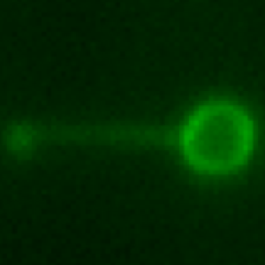
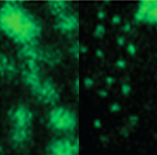

Laser tweezer
Nano-manipulation and high speed imaging combined to further our understanding of DNA repair mechanisms.

Super-resolution microscopy
Fluorescence imaging with spatial resolution far below the diffraction limit.

Clinical data
An international collaborative effort analyzing large biochemical marker datasets.